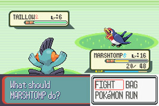
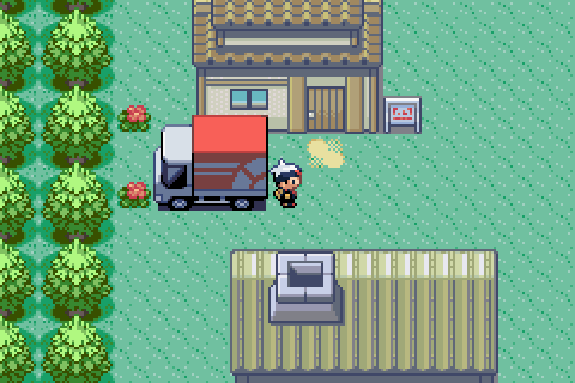
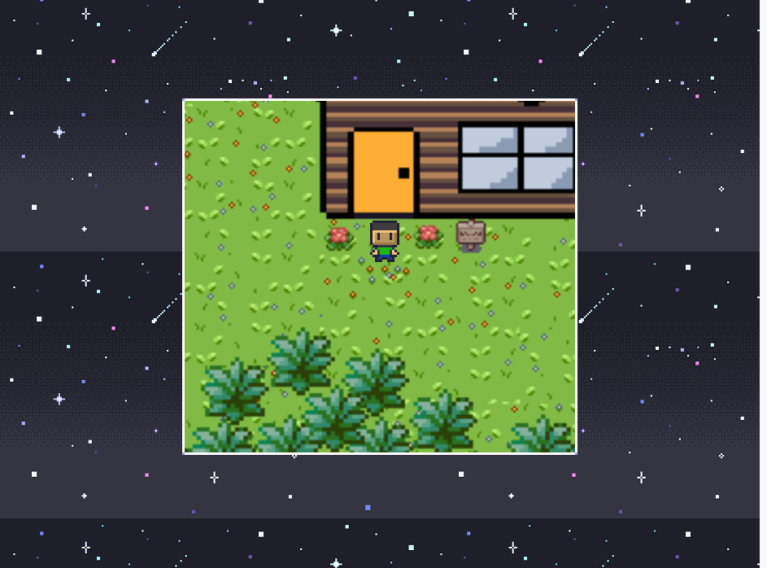
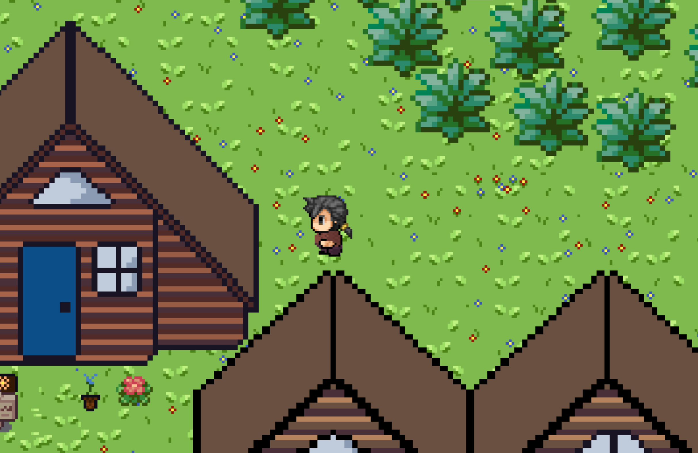
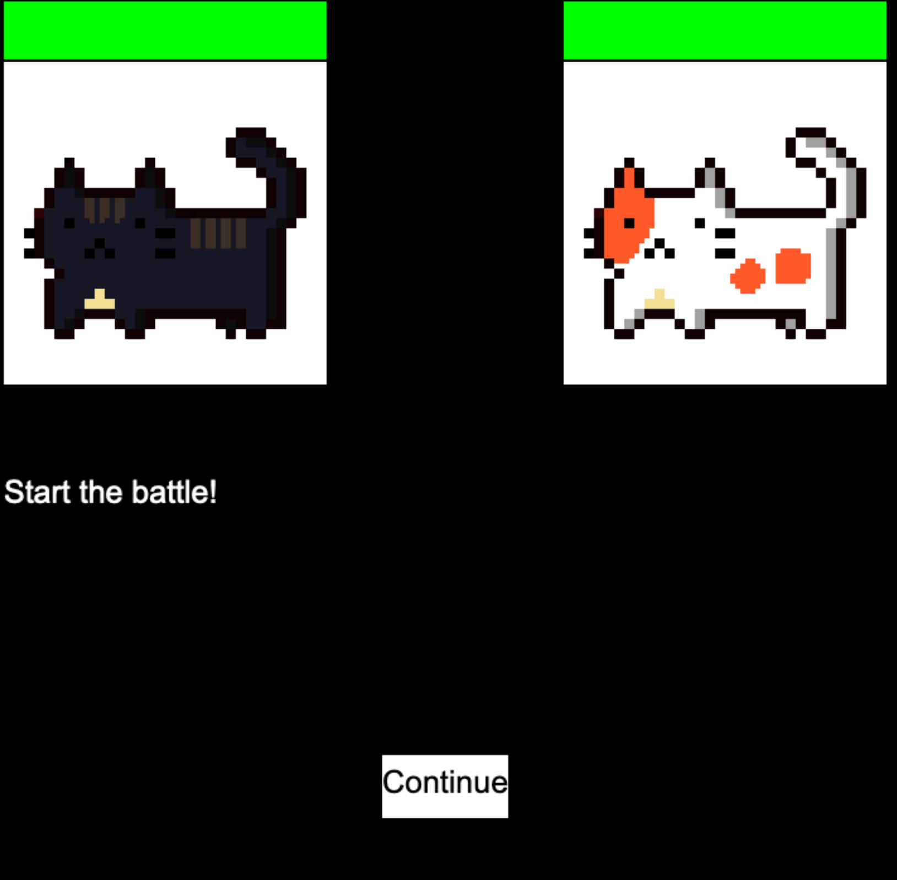
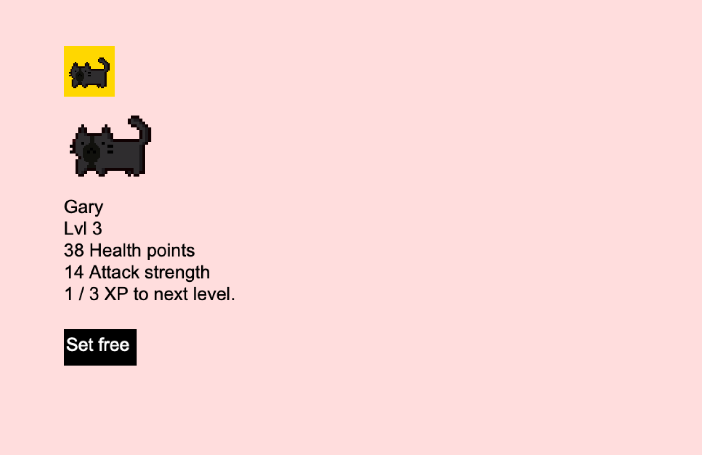
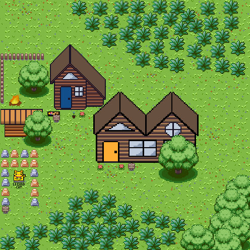

Catch the cat is a great game which implaments good gameplay and classical art. The game was disighned as a mix of the undertale battle seqence and pokemon ruby and saphire game style.
As you can see at the bottom of this example there are four options fight, item, and mercy. We wanted to take this unique game play and use it.
"So we have a idea about how there will be fights" we thought. but we had nothing to fight and we had no idea what we were going to do for art style, physics, storyline and just overall game play we were stumped. until we had the idea to come up with a game whitch is lacking in battle scene but focuses on art and storyline so we could mix the two game together. that was when we had the idea of a top down, rpg with 2d pixel art just like pokemon ruby and saphire
 We have a plan, a game style, art and basic idea but we still dont know what the main objective is after all we can't just completly copy pokemon.
We knew we wanted the game to be engaging and we needed it to be original. our thought proses was literily: whats cute, whats generic, what can you pet or catch and what can you fight. Our mind whent straight to CATS. thus the game cat catch was born.
We started off making the art and movement. using piskel and aesprite as pexil art editors and visuel stodeos and trinket as code editors. we all divided up the work: Ginny doing the textures and drawing the cats, Tom doing the art and coding, and last but not least Theo who was the main coder. We dicided to make the hgame in html5, CSS3, JS
Our jobs were set and the plan was unvailing. We now chose on a movement style. we had too options.
 We had two diforent styles of game scrolling/moving. the first one made by Tom was to try and make it seem like an old school game boy like the one that you could play pokemon ruby and saphire on, it also included a very short ranged veiw. Where Theo went with the more moden version of rpg with a wider veiw. We ended up diciding on the more moden one because the game boy version was quite confusing and would be hard to change and make walls were as the more modern one was easier to manipulate and theo the main coder new exactly how it worked.
We made it so that when you run around in long grass (just like pokemon) a screen like this will show up and you will be given four choses: pat, battle, feed, and run.
If you chose pat you will have a chance of befriending the cat or the cat may bite you and posibbly run away
Now if you chose to feed, you will have the option of chosing what to feed the cat if you feed it something that it likes you will befreand it but if it neglicts it you may lose it to a more apitizing dinner.
Now if you run like a little mouse the cat will probebly run away and you will never see it again. If only you were brave enough
If you chose to battle the cat you will have to use a cat that you have already acquired to face it. once you enter the battle a screen like this will show up and the cats will start fighting. if your cat wins you might find some gold that the cat was hording and your cat may level up.
You are able to see your cats level and stats if you want
As you can see the map is small but we do aim for a bigger map if we have more time and "motvation" we do plan on posibly making up a storyline and real npcs in the future we also plan to make the map alot bigger as this is ascentialy is a demo.
But we have completly finished the game engine and basic game pla.